Designer Health
Current deck spec and build status
This is the current running deck view. It uses the canonical deck spec
with intentionally preserved slide numbering, explicitly marks
deprecated and shelved concepts, and shows the current selected
direction plus alternate explored figure options wherever they already
exist.
Current Backbone
Version: 2026-04-08.2 Active sequence: 1 → 2 → 3 → 4 → 5 → 6 → 7 → 8 → 9 → 10 → 11 → 12 → 13 → 14 → 15 → 16 → 17 → 18 → 19 → 20 → 21 → 22 → 23 → 24 → 25 → 26 → 27 → 28 → 29 → 30 → 31 → 32 Deprecated slides: none Policy: Use simple linear numbering for the expanded workshop deck and keep the story moving from problem to build to governance. Notes: The compressed 11-slide experiment has been superseded by this expanded workshop master deck. Keep the first third concept-light, the middle third build-heavy, and the close operational. Narrative Spine
Buried policy answers create real administrative drag in residency programs. A custom GPT can become a grounded policy assistant when scope, files, and guardrails are designed well. The audience should leave knowing how to build, test, deploy, and maintain one responsibly. Connor's original workshop deck remains the source backbone, but the material is now reorganized into a more teachable sequence.
Coverage Snapshot
32 active slides
0 deprecated slides
32 slide packets checked in
32 stamped slide figures
Spec Notes
deck-spec.json is the canonical current deck backbone. The markdown docs remain companion references, but the report now renders the active / deprecated state directly from the codified spec.
Slide Selector
Pick one slide to inspect, or switch back to the full deck view.
Previous
All active slides
All slides
Slide 1 — Workshop Title and Promise
Slide 2 — Why This Matters
Slide 3 — What This Tool Is
Slide 4 — Residency Policy Work Is Repetitive
Slide 5 — Administrative Burden Shows Up in Burnout and Friction
Slide 6 — Our Solution at a Glance
Slide 7 — Where This Fits in Program Operations
Slide 8 — Why It Works
Slide 9 — Retrieval in Plain Language
Slide 10 — Benefits of Grounding
Slide 11 — Limits and Failure Modes
Slide 12 — What Good Looks Like
Slide 13 — Good Answer Versus Bad Answer
Slide 14 — Source Prep
Slide 15 — What to Upload
Slide 16 — File Hygiene and Versioning
Slide 17 — Garbage In, Garbage Out
Slide 18 — Tooling Options
Slide 19 — The Five-Step Build Workflow
Slide 20 — Live Walkthrough Setup
Slide 21 — Start a Custom GPT
Slide 22 — Create Versus Configure
Slide 23 — Instructions: Role and Scope
Slide 24 — Knowledge and Capabilities
Slide 25 — Guardrails: Citations, Refusals, Tone
Slide 26 — Test in Preview
Slide 27 — Push on Unknowns and Conflicts
Slide 28 — Deploy and Share
Slide 29 — Governance and Maintenance
Slide 30 — Best Practices
Slide 31 — Future Opportunities
Slide 32 — Takeaways and Q&A
Next
Active Backbone
These are the slides currently in the running deck. Public slide
numbers come directly from deck-spec.json; when repo slide
ids or stamped roots differ, those legacy storage identities are shown
separately instead of being treated as the public deck order.
Slide 1
Workshop Title and Promise
Stamped figure exists
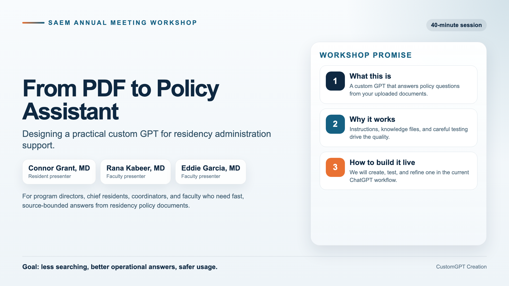
slide-01 preview
Current Running Spec
Status: active Purpose: Open the talk, establish presenters, and frame the workshop promise. Header: From PDF to Policy Assistant Subheader: Designing a practical custom GPT for residency administration support Takeaway: This workshop will show what the tool is, why it works, and how to build one. Figure role: Orient the audience with title, presenters, and workshop structure. Family: conference-title
Build Notes
Build status: packet and mockup drafted Selected direction: Title-promise v1 is the current selected opener. Notes: Use this as the clean typographic opener while the rest of the workshop visual language settles.
Imported Figure Suggestion
_No imported figure suggestion found._
Figure Options
Main selected direction: Title Promise V1.
Current Selection
Title Promise V1
main selected
Title Promise V1 preview
Typographic opener that uses the SAEM palette and a three-step workshop promise panel.
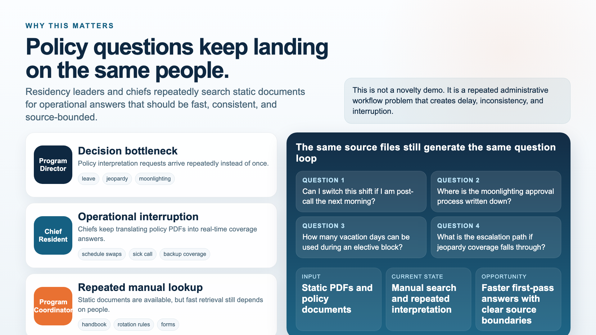
slide-02 preview
Current Running Spec
Status: active Purpose: Show the administrative pain point and why the audience should care immediately. Header: Policy questions keep landing on the same people Subheader: Program directors, chiefs, coordinators, and residents repeatedly search static documents for operational answers Takeaway: This is a workflow problem worth fixing, not just a novelty demo. Figure role: Make the administrative burden tangible without overloading the audience. Family: problem-frame
Build Notes
Build status: packet and mockup drafted Selected direction: Workflow-burden v1 is the current selected problem frame. Notes: This replaces a denser theory-first opening with a direct operational burden frame.
Imported Figure Suggestion
_Current slide 2 merges multiple legacy source slides, so all imported figure suggestions are shown here._
Figure Options
Main selected direction: Workflow Burden V1.
Current Selection
Workflow Burden V1
main selected
Workflow Burden V1 preview
Two-panel burden slide showing the people who absorb policy lookup work and the repeated question loop they face.
Slide 3
What This Tool Is
Stamped figure exists
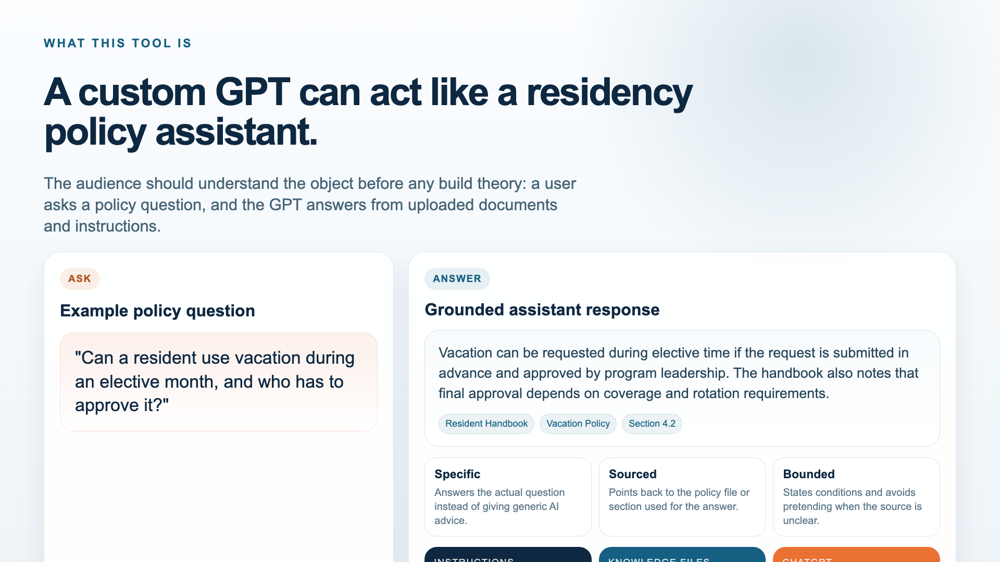
slide-03 preview
Current Running Spec
Status: active Purpose: Define the product plainly before theory. Header: A custom GPT can act like a residency policy assistant Subheader: It answers questions using uploaded policies, instructions, and selected capabilities inside ChatGPT Takeaway: The audience should understand the object before hearing how it is built. Figure role: Show a concrete input/output example of a grounded policy answer. Family: concept-card
Build Notes
Build status: packet and mockup drafted Selected direction: Policy-assistant-object v1 is the current selected concept card. Notes: Keep the example clearly illustrative so it teaches the object without implying specific institutional policy.
Imported Figure Suggestion
_No imported figure suggestion found._
Figure Options
Main selected direction: Policy Assistant Object V1.
Current Selection
Policy Assistant Object V1
main selected
Policy Assistant Object V1 preview
Question-to-answer concept card that shows the assistant as a grounded policy Q&A workflow before the build walkthrough.
Slide 4
Residency Policy Work Is Repetitive
Stamped figure exists
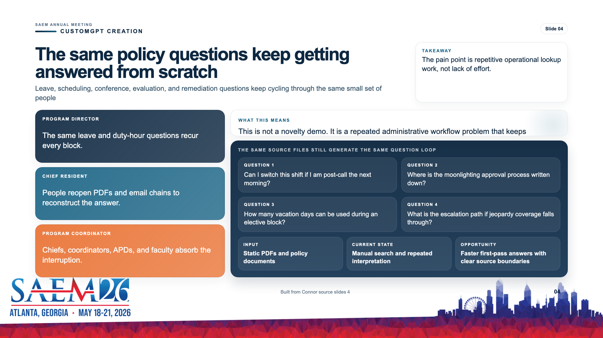
slide-04 preview
Current Running Spec
Status: active Purpose: Make the repeated lookup work concrete before we talk about product mechanics. Header: The same policy questions keep getting answered from scratch Subheader: Leave, scheduling, conference, evaluation, and remediation questions keep cycling through the same small set of people Takeaway: The pain point is repetitive operational lookup work, not lack of effort. Figure role: Show a repeated question loop hitting the same program roles. Family: problem-loop
Build Notes
Build status: packet and seeded mockup drafted Selected direction: Workflow Repetition V1 is the current selected mockup. Notes: The same leave and duty-hour questions recur every block. People reopen PDFs and email chains to reconstruct the answer. Chiefs, coordinators, APDs, and faculty absorb the interruption.
Imported Figure Suggestion
_No imported figure suggestion found._
Figure Options
Main selected direction: Workflow Repetition V1.
Current Selection
Workflow Repetition V1
main selected
Workflow Repetition V1 preview
Loop-based problem frame that shows the same operational questions recurring across the residency team.
Slide 5
Administrative Burden Shows Up in Burnout and Friction
Stamped figure exists
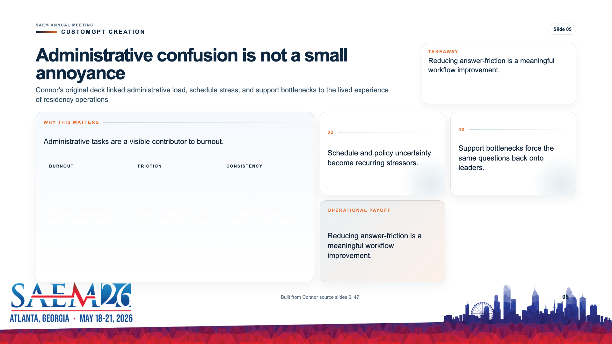
slide-05 preview
Current Running Spec
Status: active Purpose: Connect the policy-lookup problem to resident stress and administrative drag. Header: Administrative confusion is not a small annoyance Subheader: Connor's original deck linked administrative load, schedule stress, and support bottlenecks to the lived experience of residency operations Takeaway: Reducing answer-friction is a meaningful workflow improvement. Figure role: Use evidence-backed burden cards instead of a wall of text. Family: burden-data
Build Notes
Build status: packet and seeded mockup drafted Selected direction: Burden Data V1 is the current selected mockup. Notes: Administrative tasks are a visible contributor to burnout. Schedule and policy uncertainty become recurring stressors. Support bottlenecks force the same questions back onto leaders.
Imported Figure Suggestion
_Current slide 5 merges multiple legacy source slides, so all imported figure suggestions are shown here._
Figure Options
Main selected direction: Burden Data V1.
Current Selection
Burden Data V1
main selected
Burden Data V1 preview
Evidence-flavored burden board tying policy confusion to burnout, interruptions, and avoidable stress.
Slide 6
Our Solution at a Glance
Stamped figure exists
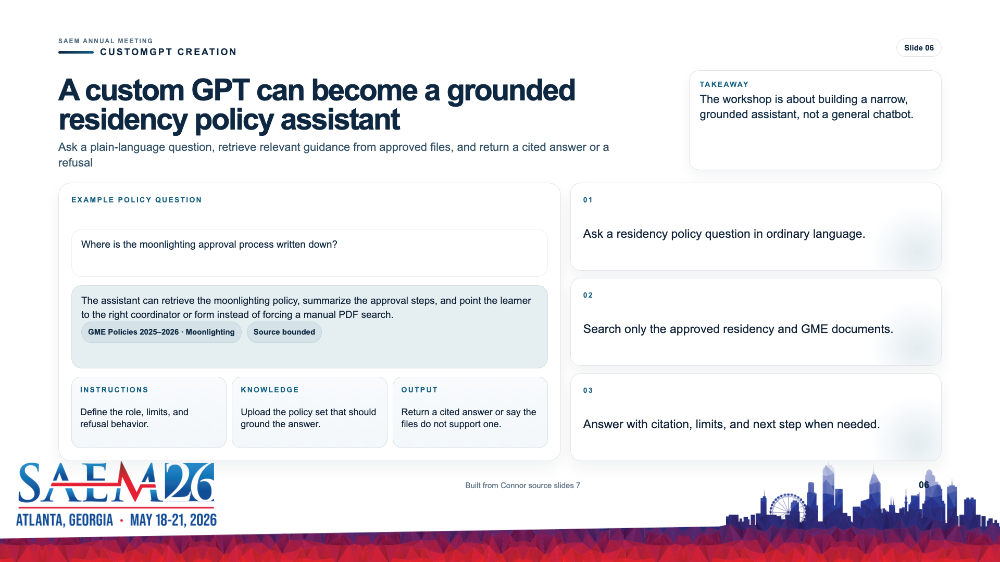
slide-06 preview
Current Running Spec
Status: active Purpose: Translate Connor's solution slide into a clear product-shaped promise. Header: A custom GPT can become a grounded residency policy assistant Subheader: Ask a plain-language question, retrieve relevant guidance from approved files, and return a cited answer or a refusal Takeaway: The workshop is about building a narrow, grounded assistant, not a general chatbot. Figure role: Show the assistant as a practical input-output workflow. Family: solution-card
Build Notes
Build status: packet and seeded mockup drafted Selected direction: Solution at a Glance V1 is the current selected mockup. Notes: Ask a residency policy question in ordinary language. Search only the approved residency and GME documents. Answer with citation, limits, and next step when needed.
Imported Figure Suggestion
_No imported figure suggestion found._
Figure Options
Main selected direction: Solution at a Glance V1.
Current Selection
Solution at a Glance V1
main selected
Solution at a Glance V1 preview
Three-card solution frame that makes the assistant feel concrete and bounded.
Slide 7
Where This Fits in Program Operations
Stamped figure exists
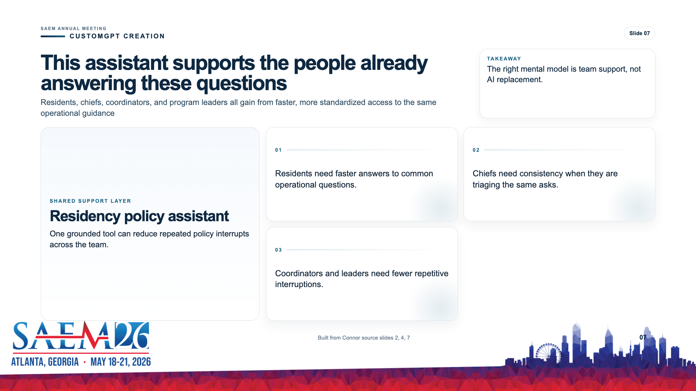
slide-07 preview
Current Running Spec
Status: active Purpose: Show who benefits from the tool and where it belongs in day-to-day work. Header: This assistant supports the people already answering these questions Subheader: Residents, chiefs, coordinators, and program leaders all gain from faster, more standardized access to the same operational guidance Takeaway: The right mental model is team support, not AI replacement. Figure role: Map the assistant to the real roles in the residency workflow. Family: stakeholder-map
Build Notes
Build status: packet and seeded mockup drafted Selected direction: Program Operations Fit V1 is the current selected mockup. Notes: Residents need faster answers to common operational questions. Chiefs need consistency when they are triaging the same asks. Coordinators and leaders need fewer repetitive interruptions.
Imported Figure Suggestion
_Current slide 7 merges multiple legacy source slides, so all imported figure suggestions are shown here._
Figure Options
Main selected direction: Program Operations Fit V1.
Current Selection
Program Operations Fit V1
main selected
Program Operations Fit V1 preview
Role-based support map showing where the assistant reduces repeated policy interrupts.
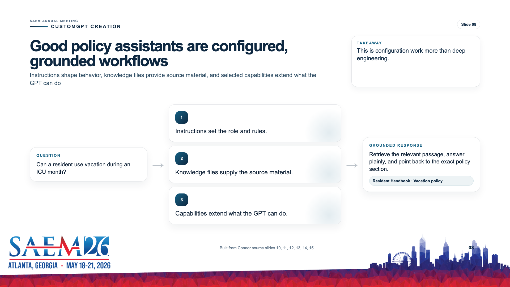
slide-08 preview
Current Running Spec
Status: active Purpose: Explain the mechanism in plain language without turning this into a theory lecture. Header: Good policy assistants are configured, grounded workflows Subheader: Instructions shape behavior, knowledge files provide source material, and selected capabilities extend what the GPT can do Takeaway: This is configuration work more than deep engineering. Figure role: Use a simple three-part system map rather than dense architecture. Family: system-diagram
Build Notes
Build status: packet and seeded mockup drafted Selected direction: Why It Works V1 is the current selected mockup. Notes: Instructions set the role and rules. Knowledge files supply the source material. Capabilities extend what the GPT can do.
Imported Figure Suggestion
_Current slide 8 merges multiple legacy source slides, so all imported figure suggestions are shown here._
Figure Options
Main selected direction: Why It Works V1.
Current Selection
Why It Works V1
main selected
Why It Works V1 preview
Plain-language systems slide showing instructions, knowledge, and capabilities working together.
Slide 9
Retrieval in Plain Language
Stamped figure exists
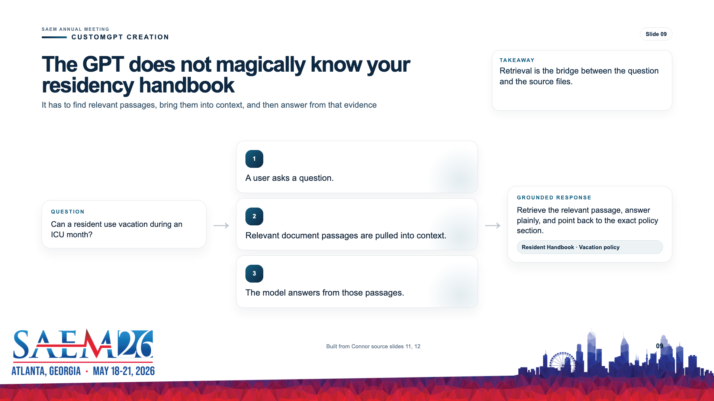
slide-09 preview
Current Running Spec
Status: active Purpose: Give the audience one simple retrieval explanation they can repeat later. Header: The GPT does not magically know your residency handbook Subheader: It has to find relevant passages, bring them into context, and then answer from that evidence Takeaway: Retrieval is the bridge between the question and the source files. Figure role: Break retrieval into a few memorable steps. Family: grounded-flow
Build Notes
Build status: packet and seeded mockup drafted Selected direction: Retrieval Plain Language V1 is the current selected mockup. Notes: A user asks a question. Relevant document passages are pulled into context. The model answers from those passages.
Imported Figure Suggestion
_Current slide 9 merges multiple legacy source slides, so all imported figure suggestions are shown here._
Figure Options
Main selected direction: Retrieval Plain Language V1.
Current Selection
Retrieval Plain Language V1
main selected
Retrieval Plain Language V1 preview
Three-step retrieval explainer that keeps the mechanism teachable and concrete.
Slide 10
Benefits of Grounding
Stamped figure exists
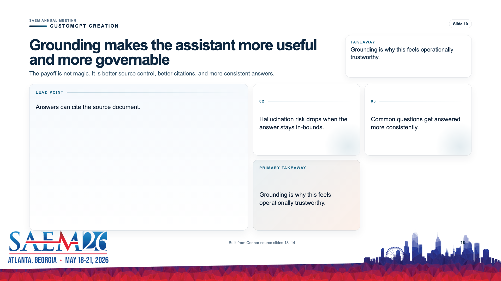
slide-10 preview
Current Running Spec
Status: active Purpose: Land the upside of grounded answers without overselling the tool. Header: Grounding makes the assistant more useful and more governable Subheader: The payoff is not magic. It is better source control, better citations, and more consistent answers. Takeaway: Grounding is why this feels operationally trustworthy. Figure role: Use a benefit grid with clear operational payoffs. Family: benefit-grid
Build Notes
Build status: packet and seeded mockup drafted Selected direction: Benefits of Grounding V1 is the current selected mockup. Notes: Answers can cite the source document. Hallucination risk drops when the answer stays in-bounds. Common questions get answered more consistently.
Imported Figure Suggestion
_Current slide 10 merges multiple legacy source slides, so all imported figure suggestions are shown here._
Figure Options
Main selected direction: Benefits of Grounding V1.
Current Selection
Benefits of Grounding V1
main selected
Benefits of Grounding V1 preview
Benefit grid showing why grounded answers are easier to trust and deploy.
Slide 11
Limits and Failure Modes
Stamped figure exists
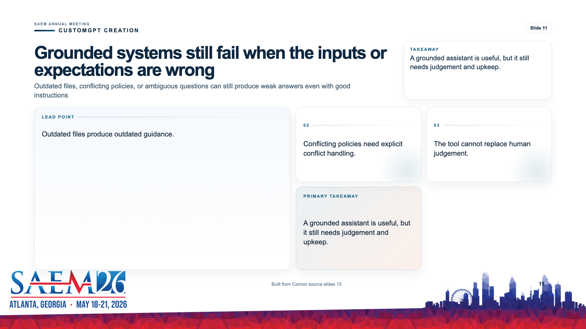
slide-11 preview
Current Running Spec
Status: active Purpose: Make the boundaries explicit before the live build creates false confidence. Header: Grounded systems still fail when the inputs or expectations are wrong Subheader: Outdated files, conflicting policies, or ambiguous questions can still produce weak answers even with good instructions Takeaway: A grounded assistant is useful, but it still needs judgement and upkeep. Figure role: Show the main failure modes as bounded risks. Family: limitation-grid
Build Notes
Build status: packet and seeded mockup drafted Selected direction: Limits and Failure Modes V1 is the current selected mockup. Notes: Outdated files produce outdated guidance. Conflicting policies need explicit conflict handling. The tool cannot replace human judgement.
Imported Figure Suggestion
_No imported figure suggestion found._
Figure Options
Main selected direction: Limits and Failure Modes V1.
Current Selection
Limits and Failure Modes V1
main selected
Limits and Failure Modes V1 preview
Risk grid showing document quality, conflict, and judgement limits without alarmism.
Slide 12
What Good Looks Like
Stamped figure exists
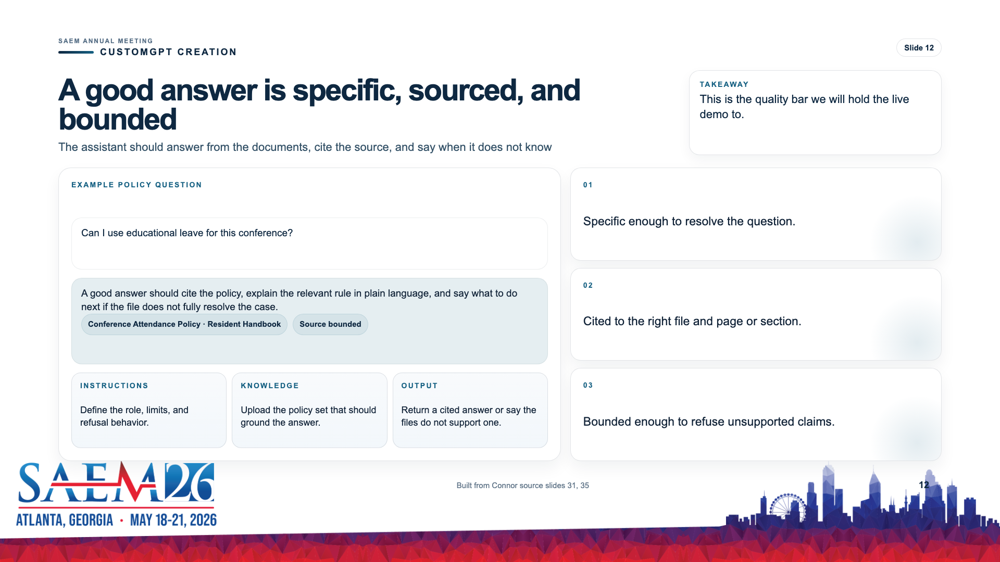
slide-12 preview
Current Running Spec
Status: active Purpose: Set the answer-quality bar before the audience sees the build. Header: A good answer is specific, sourced, and bounded Subheader: The assistant should answer from the documents, cite the source, and say when it does not know Takeaway: This is the quality bar we will hold the live demo to. Figure role: Use three quality pillars instead of abstract prompting advice. Family: quality-pillars
Build Notes
Build status: packet and seeded mockup drafted Selected direction: What Good Looks Like V1 is the current selected mockup. Notes: Specific enough to resolve the question. Cited to the right file and page or section. Bounded enough to refuse unsupported claims.
Imported Figure Suggestion
_Current slide 12 merges multiple legacy source slides, so all imported figure suggestions are shown here._
Figure Options
Main selected direction: What Good Looks Like V1.
Current Selection
What Good Looks Like V1
main selected
What Good Looks Like V1 preview
Three-pillar answer-quality slide that defines success before the walkthrough.
Slide 13
Good Answer Versus Bad Answer
Stamped figure exists
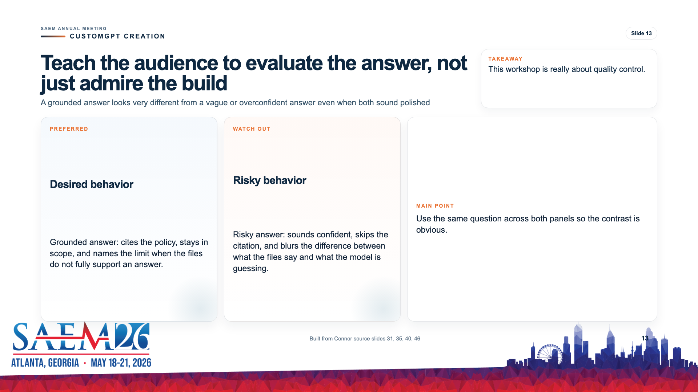
slide-13 preview
Current Running Spec
Status: active Purpose: Turn the quality bar into a side-by-side comparison the audience can judge quickly. Header: Teach the audience to evaluate the answer, not just admire the build Subheader: A grounded answer looks very different from a vague or overconfident answer even when both sound polished Takeaway: This workshop is really about quality control. Figure role: Show a good answer and a risky answer side by side. Family: answer-compare
Build Notes
Build status: packet and seeded mockup drafted Selected direction: Good vs Bad Answer V1 is the current selected mockup. Notes: Grounded answer: cites the policy, stays in scope, and names the limit when the files do not fully support an answer. Risky answer: sounds confident, skips the citation, and blurs the difference between what the files say and what the model is guessing. Use the same question across both panels so the contrast is obvious.
Imported Figure Suggestion
_Current slide 13 merges multiple legacy source slides, so all imported figure suggestions are shown here._
Figure Options
Main selected direction: Good vs Bad Answer V1.
Current Selection
Good vs Bad Answer V1
main selected
Good vs Bad Answer V1 preview
Side-by-side answer comparison showing what good grounding looks like in practice.
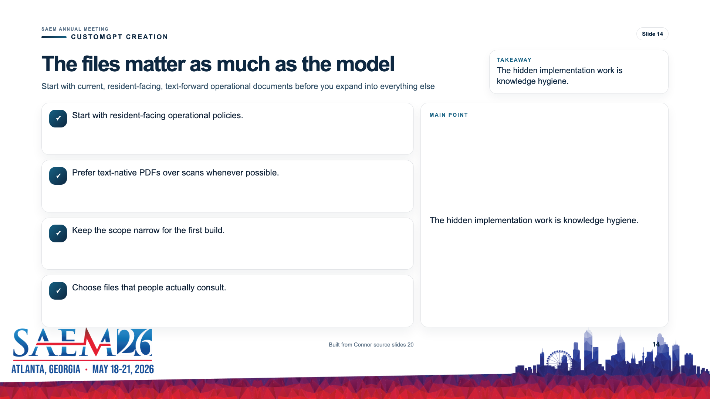
slide-14 preview
Current Running Spec
Status: active Purpose: Show the preparation work that determines whether the assistant is any good. Header: The files matter as much as the model Subheader: Start with current, resident-facing, text-forward operational documents before you expand into everything else Takeaway: The hidden implementation work is knowledge hygiene. Figure role: Turn source prep into a clean checklist the audience can copy later. Family: workflow-checklist
Build Notes
Build status: packet and seeded mockup drafted Selected direction: Source Prep V1 is the current selected mockup. Notes: Start with resident-facing operational policies. Prefer text-native PDFs over scans whenever possible. Keep the scope narrow for the first build. Choose files that people actually consult.
Imported Figure Suggestion
_No imported figure suggestion found._
Figure Options
Main selected direction: Source Prep V1.
Current Selection
Source Prep V1
main selected
Source Prep V1 preview
Checklist-first slide that makes source preparation feel concrete and manageable.
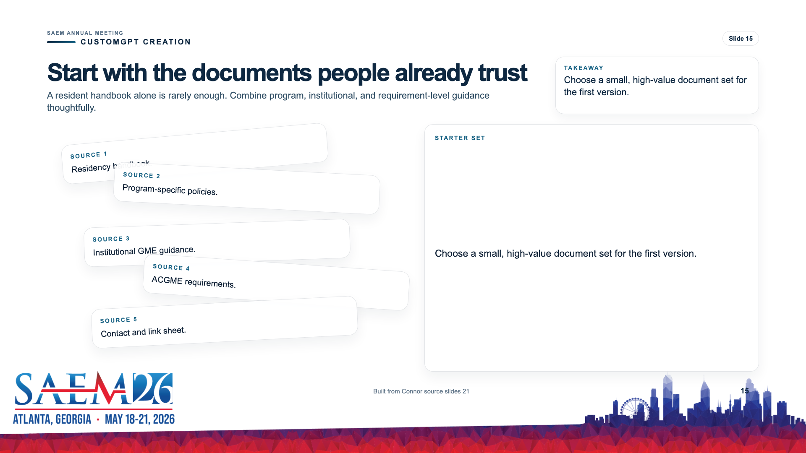
slide-15 preview
Current Running Spec
Status: active Purpose: Make the first knowledge-base contents concrete for the audience. Header: Start with the documents people already trust Subheader: A resident handbook alone is rarely enough. Combine program, institutional, and requirement-level guidance thoughtfully. Takeaway: Choose a small, high-value document set for the first version. Figure role: Show the starter document stack clearly. Family: document-stack
Build Notes
Build status: packet and seeded mockup drafted Selected direction: What to Upload V1 is the current selected mockup. Notes: Residency handbook. Program-specific policies. Institutional GME guidance. ACGME requirements. Contact and link sheet.
Imported Figure Suggestion
_No imported figure suggestion found._
Figure Options
Main selected direction: What to Upload V1.
Current Selection
What to Upload V1
main selected
What to Upload V1 preview
Starter document stack for the first grounded policy assistant knowledge base.
Slide 16
File Hygiene and Versioning
Stamped figure exists
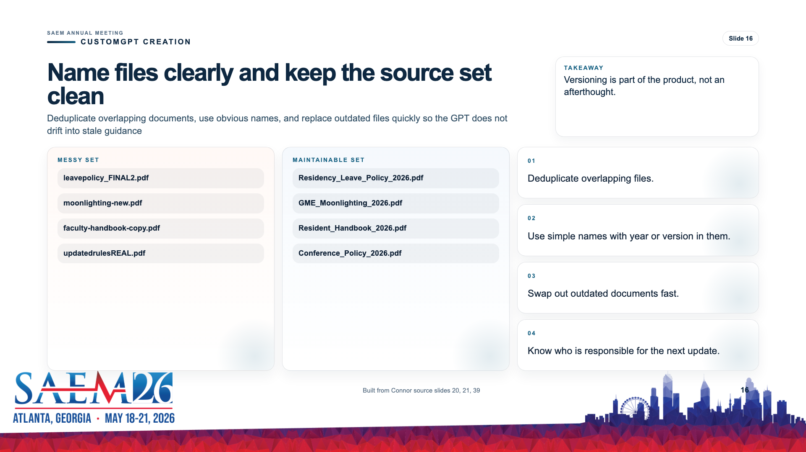
slide-16 preview
Current Running Spec
Status: active Purpose: Carry Connor's document-prep advice into a maintainable operating habit. Header: Name files clearly and keep the source set clean Subheader: Deduplicate overlapping documents, use obvious names, and replace outdated files quickly so the GPT does not drift into stale guidance Takeaway: Versioning is part of the product, not an afterthought. Figure role: Show the difference between messy and maintainable document practices. Family: file-hygiene
Build Notes
Build status: packet and seeded mockup drafted Selected direction: File Hygiene and Versioning V1 is the current selected mockup. Notes: Deduplicate overlapping files. Use simple names with year or version in them. Swap out outdated documents fast. Know who is responsible for the next update.
Imported Figure Suggestion
_Current slide 16 merges multiple legacy source slides, so all imported figure suggestions are shown here._
Figure Options
Main selected direction: File Hygiene and Versioning V1.
Current Selection
File Hygiene and Versioning V1
main selected
File Hygiene and Versioning V1 preview
Document-hygiene slide that reframes versioning as part of safe deployment.
Slide 17
Garbage In, Garbage Out
Stamped figure exists
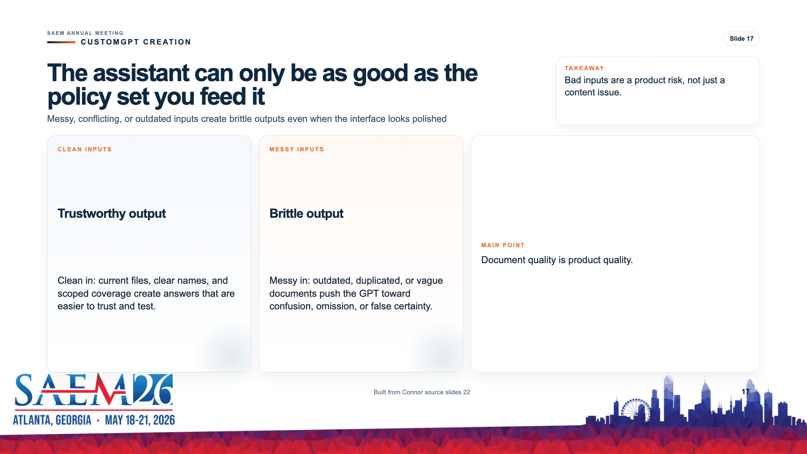
slide-17 preview
Current Running Spec
Status: active Purpose: Keep Connor's GIGO point as a memorable quality-control warning. Header: The assistant can only be as good as the policy set you feed it Subheader: Messy, conflicting, or outdated inputs create brittle outputs even when the interface looks polished Takeaway: Bad inputs are a product risk, not just a content issue. Figure role: Use a stark compare that makes the warning memorable. Family: input-output-compare
Build Notes
Build status: packet and seeded mockup drafted Selected direction: GIGO V1 is the current selected mockup. Notes: Clean in: current files, clear names, and scoped coverage create answers that are easier to trust and test. Messy in: outdated, duplicated, or vague documents push the GPT toward confusion, omission, or false certainty. Document quality is product quality.
Imported Figure Suggestion
_No imported figure suggestion found._
Figure Options
Main selected direction: GIGO V1.
Current Selection
GIGO V1
main selected
GIGO V1 preview
Sharp clean-vs-messy input comparison that keeps the GIGO warning easy to remember.
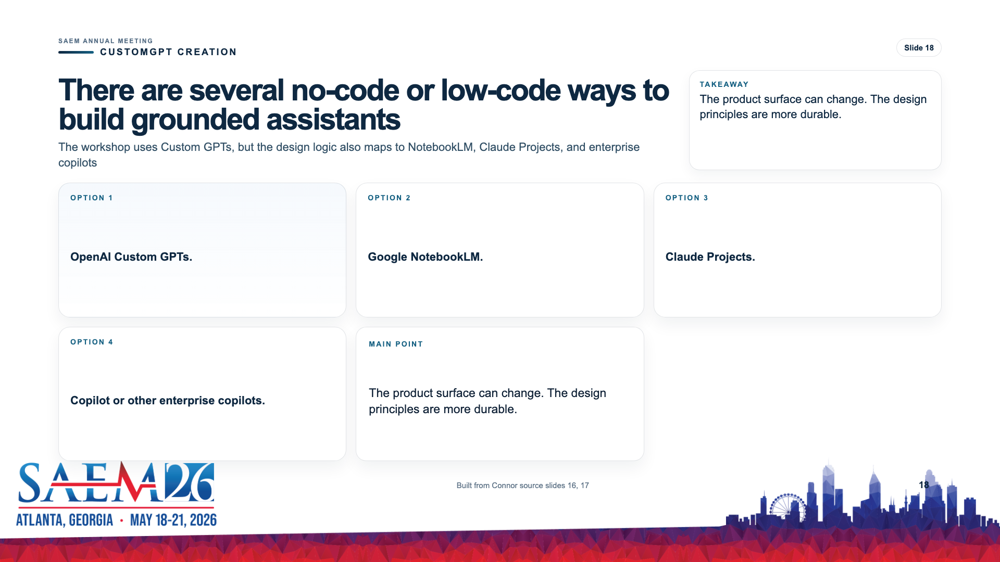
slide-18 preview
Current Running Spec
Status: active Purpose: Integrate Connor's tool-landscape slide while modernizing the framing. Header: There are several no-code or low-code ways to build grounded assistants Subheader: The workshop uses Custom GPTs, but the design logic also maps to NotebookLM, Claude Projects, and enterprise copilots Takeaway: The product surface can change. The design principles are more durable. Figure role: Show the tool landscape without turning it into a shopping slide. Family: tool-landscape
Build Notes
Build status: packet and seeded mockup drafted Selected direction: Tooling Options V1 is the current selected mockup. Notes: OpenAI Custom GPTs. Google NotebookLM. Claude Projects. Copilot or other enterprise copilots.
Imported Figure Suggestion
_Current slide 18 merges multiple legacy source slides, so all imported figure suggestions are shown here._
Figure Options
Main selected direction: Tooling Options V1.
Current Selection
Tooling Options V1
main selected
Tooling Options V1 preview
Landscape slide that positions Custom GPTs among adjacent grounded-assistant tools.
Slide 19
The Five-Step Build Workflow
Stamped figure exists
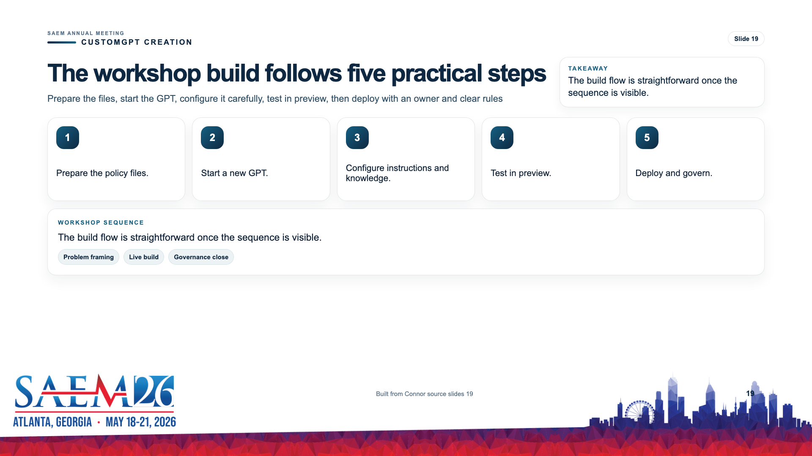
slide-19 preview
Current Running Spec
Status: active Purpose: Preserve Connor's five-step build map as the main workshop sequence. Header: The workshop build follows five practical steps Subheader: Prepare the files, start the GPT, configure it carefully, test in preview, then deploy with an owner and clear rules Takeaway: The build flow is straightforward once the sequence is visible. Figure role: Use the five-step map as the workshop backbone. Family: step-roadmap
Build Notes
Build status: packet and seeded mockup drafted Selected direction: Five-Step Build Workflow V1 is the current selected mockup. Notes: Prepare the policy files. Start a new GPT. Configure instructions and knowledge. Test in preview. Deploy and govern.
Imported Figure Suggestion
_No imported figure suggestion found._
Figure Options
Main selected direction: Five-Step Build Workflow V1.
Current Selection
Five-Step Build Workflow V1
main selected
Five-Step Build Workflow V1 preview
Five-step workflow map adapted from Connor's original build sequence.
Slide 20
Live Walkthrough Setup
Stamped figure exists
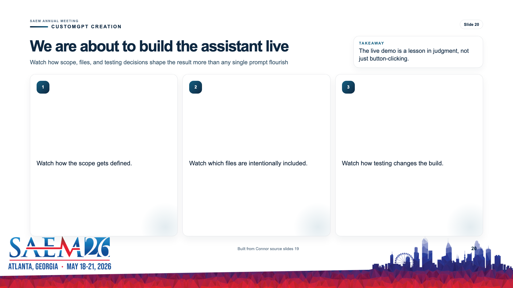
slide-20 preview
Current Running Spec
Status: active Purpose: Tell the audience what to watch for during the live build. Header: We are about to build the assistant live Subheader: Watch how scope, files, and testing decisions shape the result more than any single prompt flourish Takeaway: The live demo is a lesson in judgment, not just button-clicking. Figure role: Frame the walkthrough with a few watch-fors. Family: demo-roadmap
Build Notes
Build status: packet and seeded mockup drafted Selected direction: Live Walkthrough Setup V1 is the current selected mockup. Notes: Watch how the scope gets defined. Watch which files are intentionally included. Watch how testing changes the build.
Imported Figure Suggestion
_No imported figure suggestion found._
Figure Options
Main selected direction: Live Walkthrough Setup V1.
Current Selection
Live Walkthrough Setup V1
main selected
Live Walkthrough Setup V1 preview
Demo-orientation slide that tells the audience what to pay attention to during the build.
Slide 21
Start a Custom GPT
Stamped figure exists
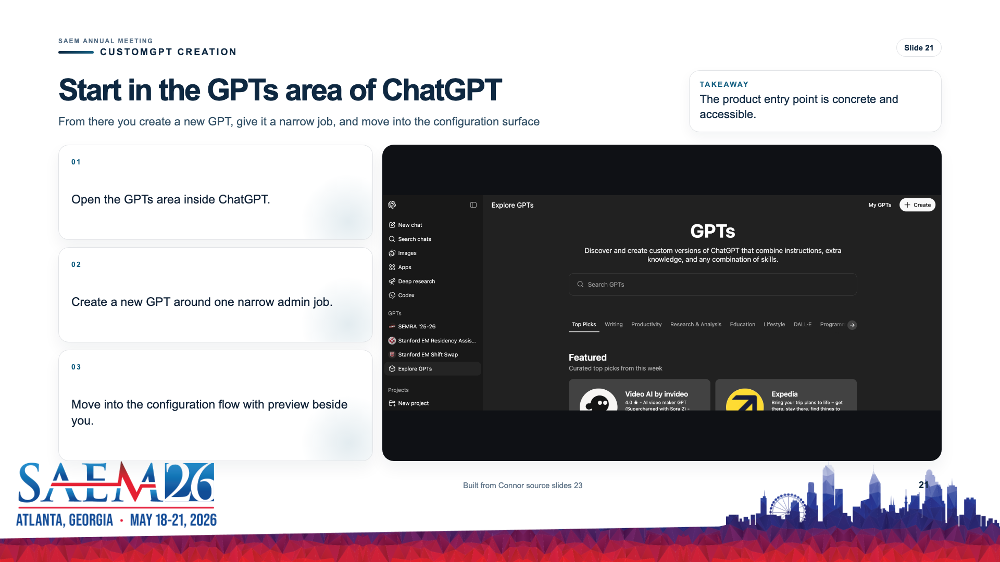
slide-21 preview
Current Running Spec
Status: active Purpose: Modernize Connor's start-here instructions into a clean visual checkpoint. Header: Start in the GPTs area of ChatGPT Subheader: From there you create a new GPT, give it a narrow job, and move into the configuration surface Takeaway: The product entry point is concrete and accessible. Figure role: Show the start surface clearly without drowning the slide in tiny UI text. Family: ui-entry
Build Notes
Build status: packet and seeded mockup drafted Selected direction: Start a Custom GPT V1 is the current selected mockup. Notes: Open the GPTs area inside ChatGPT. Create a new GPT around one narrow admin job. Move into the configuration flow with preview beside you.
Imported Figure Suggestion
_No imported figure suggestion found._
Figure Options
Main selected direction: Start a Custom GPT V1.
Current Selection
Start a Custom GPT V1
main selected
Start a Custom GPT V1 preview
Seed interface mockup for the GPTs entry point and new-GPT start state.
Slide 22
Create Versus Configure
Stamped figure exists
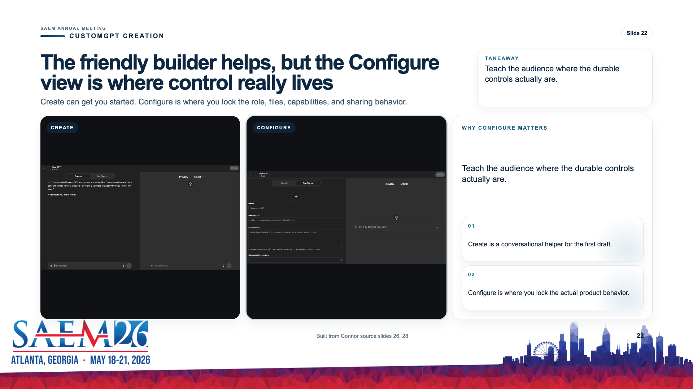
slide-22 preview
Current Running Spec
Status: active Purpose: Keep Connor's create-versus-configure distinction because it is genuinely helpful to learners. Header: The friendly builder helps, but the Configure view is where control really lives Subheader: Create can get you started. Configure is where you lock the role, files, capabilities, and sharing behavior. Takeaway: Teach the audience where the durable controls actually are. Figure role: Compare the two surfaces while making Configure feel primary. Family: ui-split
Build Notes
Build status: packet and seeded mockup drafted Selected direction: Create Versus Configure V1 is the current selected mockup. Notes: Create is a conversational helper for the first draft. Configure is where you lock the actual product behavior. Preview is the running checkpoint beside both views.
Imported Figure Suggestion
_Current slide 22 merges multiple legacy source slides, so all imported figure suggestions are shown here._
Figure Options
Main selected direction: Create Versus Configure V1.
Current Selection
Create Versus Configure V1
main selected
Create Versus Configure V1 preview
Split-surface interface slide showing why Configure is the durable build surface.
Slide 23
Instructions: Role and Scope
Stamped figure exists
slide-23 preview
Current Running Spec
Status: active Purpose: Turn Connor's role-and-scope guidance into a dedicated builder step. Header: Tell the GPT exactly what job it has and what job it does not have Subheader: A strong role statement narrows the assistant to uploaded policy support and defines what it should do when the answer is missing Takeaway: A good scope statement prevents both drift and overconfidence. Figure role: Show the role and scope instructions as the core guardrail. Family: instruction-card
Build Notes
Build status: packet and seeded mockup drafted Selected direction: Role and Scope V1 is the current selected mockup. Notes: Define the assistant as a policy-support tool. Limit answers to the uploaded documents. Instruct it to say when the answer is unsupported.
Imported Figure Suggestion
_No imported figure suggestion found._
Figure Options
Main selected direction: Role and Scope V1.
Current Selection
Role and Scope V1
main selected
Role and Scope V1 preview
Instruction-focused UI seed showing the importance of a narrow, explicit role statement.
Slide 24
Knowledge and Capabilities
Stamped figure exists
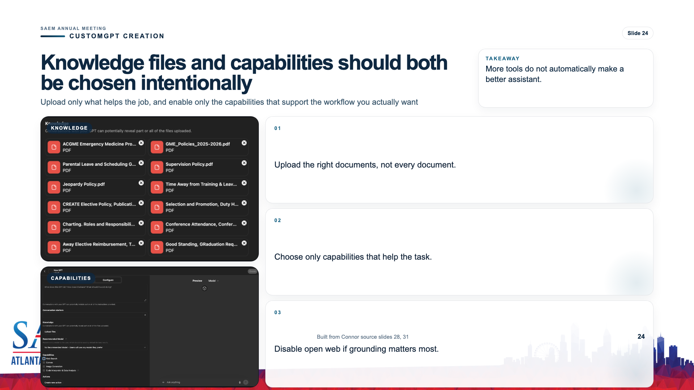
slide-24 preview
Current Running Spec
Status: active Purpose: Separate files and capabilities into their own build decision slide. Header: Knowledge files and capabilities should both be chosen intentionally Subheader: Upload only what helps the job, and enable only the capabilities that support the workflow you actually want Takeaway: More tools do not automatically make a better assistant. Figure role: Make the file and capability choices feel concrete and governable. Family: capability-stack
Build Notes
Build status: packet and seeded mockup drafted Selected direction: Knowledge and Capabilities V1 is the current selected mockup. Notes: Upload the right documents, not every document. Choose only capabilities that help the task. Disable open web if grounding matters most.
Imported Figure Suggestion
_Current slide 24 merges multiple legacy source slides, so all imported figure suggestions are shown here._
Figure Options
Main selected direction: Knowledge and Capabilities V1.
Current Selection
Knowledge and Capabilities V1
main selected
Knowledge and Capabilities V1 preview
Configuration-focused slide for file uploads, capability selection, and intentional scope control.
Slide 25
Guardrails: Citations, Refusals, Tone
Stamped figure exists
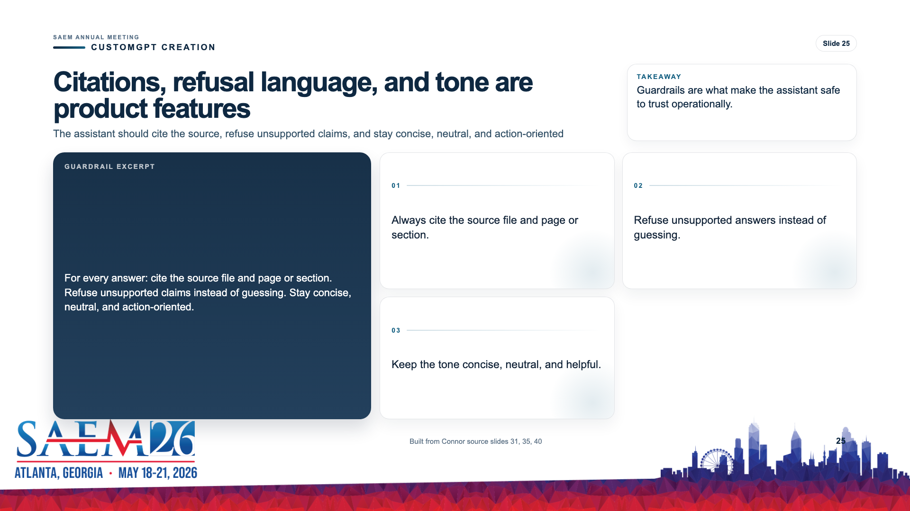
slide-25 preview
Current Running Spec
Status: active Purpose: Preserve Connor's strong instruction guardrails as a dedicated design checkpoint. Header: Citations, refusal language, and tone are product features Subheader: The assistant should cite the source, refuse unsupported claims, and stay concise, neutral, and action-oriented Takeaway: Guardrails are what make the assistant safe to trust operationally. Figure role: Show the instruction guardrails as visible build choices. Family: guardrail-grid
Build Notes
Build status: packet and seeded mockup drafted Selected direction: Guardrails V1 is the current selected mockup. Notes: Always cite the source file and page or section. Refuse unsupported answers instead of guessing. Keep the tone concise, neutral, and helpful.
Imported Figure Suggestion
_Current slide 25 merges multiple legacy source slides, so all imported figure suggestions are shown here._
Figure Options
Main selected direction: Guardrails V1.
Current Selection
Guardrails V1
main selected
Guardrails V1 preview
Guardrail board showing citation, refusal, and tone as the key instruction controls.
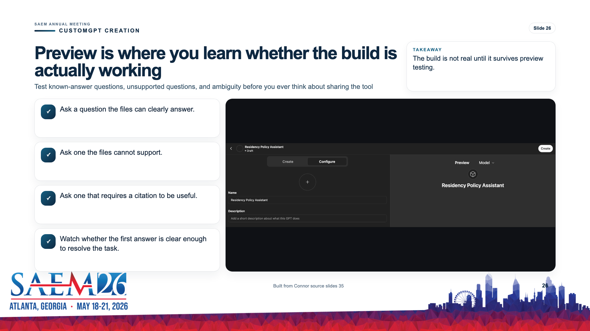
slide-26 preview
Current Running Spec
Status: active Purpose: Keep preview testing central instead of treating it as a final polish step. Header: Preview is where you learn whether the build is actually working Subheader: Test known-answer questions, unsupported questions, and ambiguity before you ever think about sharing the tool Takeaway: The build is not real until it survives preview testing. Figure role: Turn testing into a concrete checklist of scenarios. Family: preview-testing
Build Notes
Build status: packet and seeded mockup drafted Selected direction: Test in Preview V1 is the current selected mockup. Notes: Ask a question the files can clearly answer. Ask one the files cannot support. Ask one that requires a citation to be useful. Watch whether the first answer is clear enough to resolve the task.
Imported Figure Suggestion
_No imported figure suggestion found._
Figure Options
Main selected direction: Test in Preview V1.
Current Selection
Test in Preview V1
main selected
Test in Preview V1 preview
Preview-testing checklist that frames validation as part of the build itself.
Slide 27
Push on Unknowns and Conflicts
Stamped figure exists
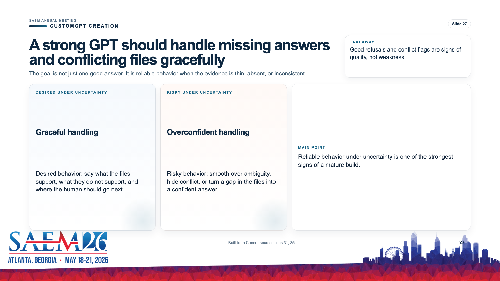
slide-27 preview
Current Running Spec
Status: active Purpose: Make edge-case testing explicit so the audience sees what safe behavior looks like. Header: A strong GPT should handle missing answers and conflicting files gracefully Subheader: The goal is not just one good answer. It is reliable behavior when the evidence is thin, absent, or inconsistent. Takeaway: Good refusals and conflict flags are signs of quality, not weakness. Figure role: Compare the behavior we want under uncertainty with the behavior we do not want. Family: edge-case-grid
Build Notes
Build status: packet and seeded mockup drafted Selected direction: Unknowns and Conflicts V1 is the current selected mockup. Notes: Desired behavior: say what the files support, what they do not support, and where the human should go next. Risky behavior: smooth over ambiguity, hide conflict, or turn a gap in the files into a confident answer. Reliable behavior under uncertainty is one of the strongest signs of a mature build.
Imported Figure Suggestion
_Current slide 27 merges multiple legacy source slides, so all imported figure suggestions are shown here._
Figure Options
Main selected direction: Unknowns and Conflicts V1.
Current Selection
Unknowns and Conflicts V1
main selected
Unknowns and Conflicts V1 preview
Edge-case testing slide that makes refusals and conflict flags feel like product wins.
Slide 28
Deploy and Share
Stamped figure exists
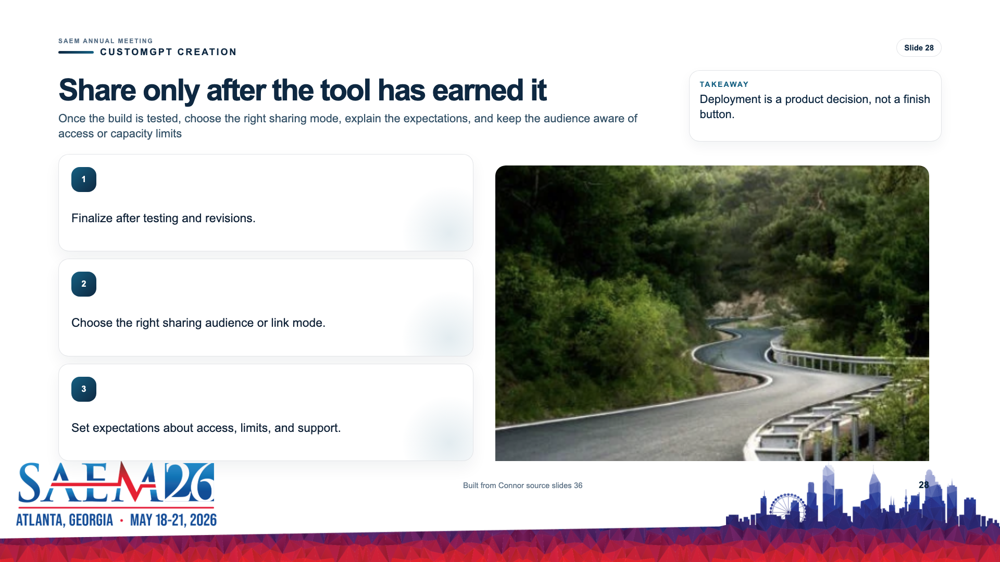
slide-28 preview
Current Running Spec
Status: active Purpose: Preserve Connor's deployment step while keeping the audience focused on readiness. Header: Share only after the tool has earned it Subheader: Once the build is tested, choose the right sharing mode, explain the expectations, and keep the audience aware of access or capacity limits Takeaway: Deployment is a product decision, not a finish button. Figure role: Show deployment as a final gate rather than a casual click. Family: deployment-roadmap
Build Notes
Build status: packet and seeded mockup drafted Selected direction: Deploy and Share V1 is the current selected mockup. Notes: Finalize after testing and revisions. Choose the right sharing audience or link mode. Set expectations about access, limits, and support.
Imported Figure Suggestion
_No imported figure suggestion found._
Figure Options
Main selected direction: Deploy and Share V1.
Current Selection
Deploy and Share V1
main selected
Deploy and Share V1 preview
Deployment slide that reframes sharing as a readiness gate with audience expectations attached.
Slide 29
Governance and Maintenance
Stamped figure exists
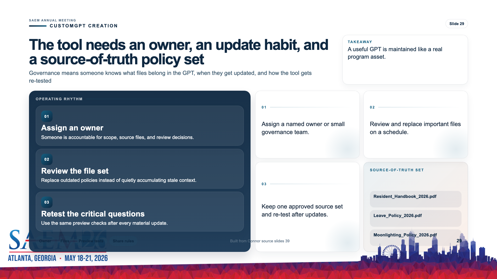
slide-29 preview
Current Running Spec
Status: active Purpose: Carry Connor's maintenance slide into the operational close of the talk. Header: The tool needs an owner, an update habit, and a source-of-truth policy set Subheader: Governance means someone knows what files belong in the GPT, when they get updated, and how the tool gets re-tested Takeaway: A useful GPT is maintained like a real program asset. Figure role: Use an operational governance grid, not a compliance wall of text. Family: governance-grid
Build Notes
Build status: packet and seeded mockup drafted Selected direction: Governance and Maintenance V1 is the current selected mockup. Notes: Assign a named owner or small governance team. Review and replace important files on a schedule. Keep one approved source set and re-test after updates.
Imported Figure Suggestion
_No imported figure suggestion found._
Figure Options
Main selected direction: Governance and Maintenance V1.
Current Selection
Governance and Maintenance V1
main selected
Governance and Maintenance V1 preview
Governance grid showing ownership, update cadence, and source control as the core maintenance habits.
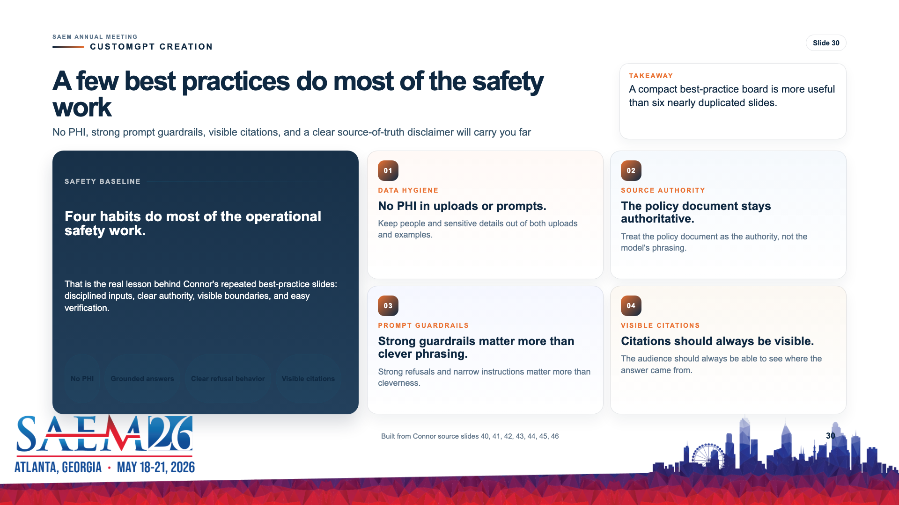
slide-30 preview
Current Running Spec
Status: active Purpose: Consolidate Connor's repeated best-practice slides into one stronger board. Header: A few best practices do most of the safety work Subheader: No PHI, strong prompt guardrails, visible citations, and a clear source-of-truth disclaimer will carry you far Takeaway: A compact best-practice board is more useful than six nearly duplicated slides. Figure role: Turn the repeated best-practice content into one memorable grid. Family: practice-grid
Build Notes
Build status: packet and seeded mockup drafted Selected direction: Best Practices V1 is the current selected mockup. Notes: No PHI in uploads or prompts. The policy document stays authoritative. Strong guardrails matter more than clever phrasing. Citations should always be visible.
Imported Figure Suggestion
_Current slide 30 merges multiple legacy source slides, so all imported figure suggestions are shown here._
Figure Options
Main selected direction: Best Practices V1.
Current Selection
Best Practices V1
main selected
Best Practices V1 preview
Consolidated best-practice board built from Connor's repeated close-section guidance.
Slide 31
Future Opportunities
Stamped figure exists
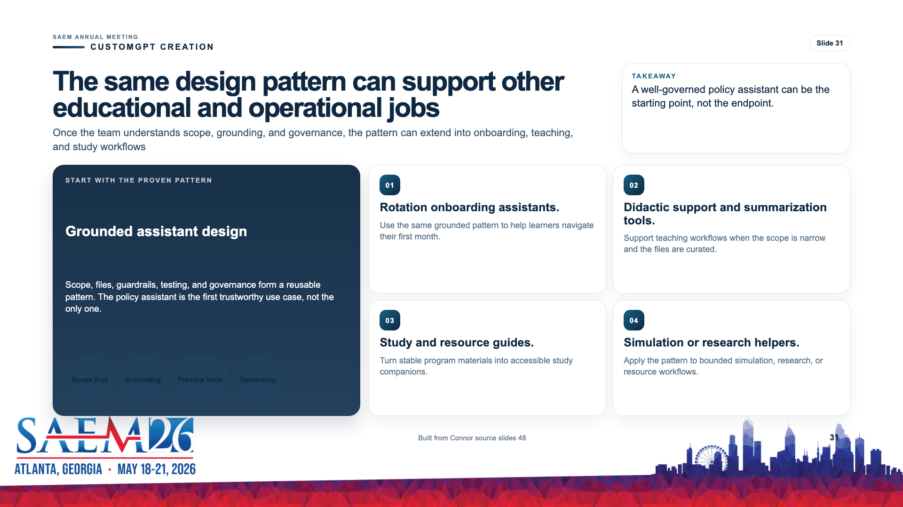
slide-31 preview
Current Running Spec
Status: active Purpose: Keep Connor's future-opportunities slide as the optimistic near-close. Header: The same design pattern can support other educational and operational jobs Subheader: Once the team understands scope, grounding, and governance, the pattern can extend into onboarding, teaching, and study workflows Takeaway: A well-governed policy assistant can be the starting point, not the endpoint. Figure role: Show adjacent opportunities without making the current talk feel unfocused. Family: opportunity-grid
Build Notes
Build status: packet and seeded mockup drafted Selected direction: Future Opportunities V1 is the current selected mockup. Notes: Rotation onboarding assistants. Didactic support and summarization tools. Study and resource guides. Simulation or research helpers.
Imported Figure Suggestion
_No imported figure suggestion found._
Figure Options
Main selected direction: Future Opportunities V1.
Current Selection
Future Opportunities V1
main selected
Future Opportunities V1 preview
Opportunity grid that keeps Connor's forward-looking energy while staying connected to the workshop theme.
Slide 32
Takeaways and Q&A
Stamped figure exists
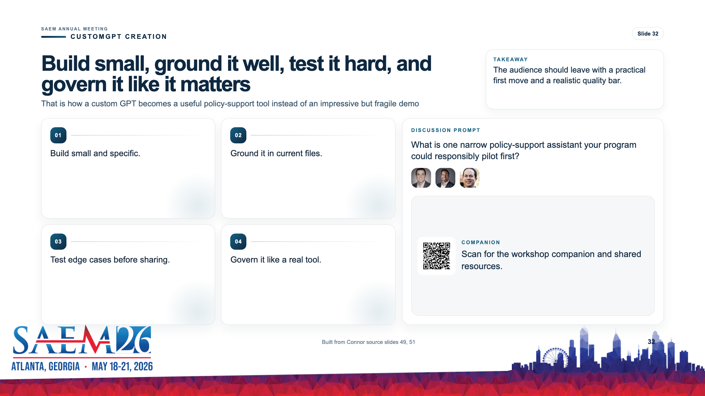
slide-32 preview
Current Running Spec
Status: active Purpose: Close the workshop cleanly with practical next steps and room for discussion. Header: Build small, ground it well, test it hard, and govern it like it matters Subheader: That is how a custom GPT becomes a useful policy-support tool instead of an impressive but fragile demo Takeaway: The audience should leave with a practical first move and a realistic quality bar. Figure role: Use a crisp closing summary with optional contact or QR space. Family: closing-summary
Build Notes
Build status: packet and seeded mockup drafted Selected direction: Takeaways and Q&A V1 is the current selected mockup. Notes: Build small and specific. Ground it in current files. Test edge cases before sharing. Govern it like a real tool.
Imported Figure Suggestion
_Current slide 32 merges multiple legacy source slides, so all imported figure suggestions are shown here._
Figure Options
Main selected direction: Takeaways and Q&A V1.
Current Selection
Takeaways and Q&A V1
main selected
Takeaways and Q&A V1 preview
Closing summary slide that turns the workshop into a compact operating checklist.
Deprecated / Shelved
These slides and concepts are retained only as historical context. They
are not part of the current backbone, but they remain useful for
tracking what was merged, reopened, or shelved.

{kind=link}
{kind=link}
{kind=link}
{kind=link}
{kind=link}
{kind=link}
{kind=link}
{kind=link}
{kind=link}
{kind=link}
{kind=link}
{kind=link}
{kind=link}
{kind=link}
{kind=link}
{kind=link}
{kind=link}
{kind=link}
{kind=link}
{kind=link}
{kind=link}
{kind=link}
{kind=link}
{kind=link}
{kind=link}
{kind=link}
{kind=link}
{kind=link}
{kind=link}
{kind=link}
{kind=link}
{kind=link}